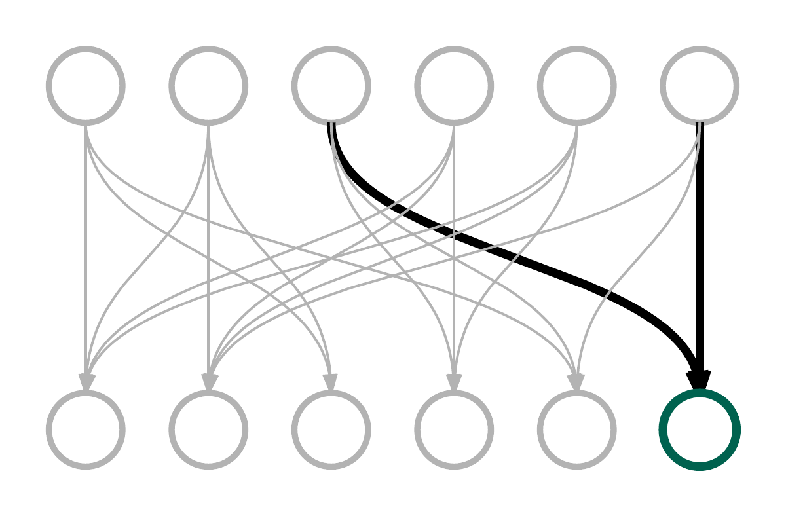
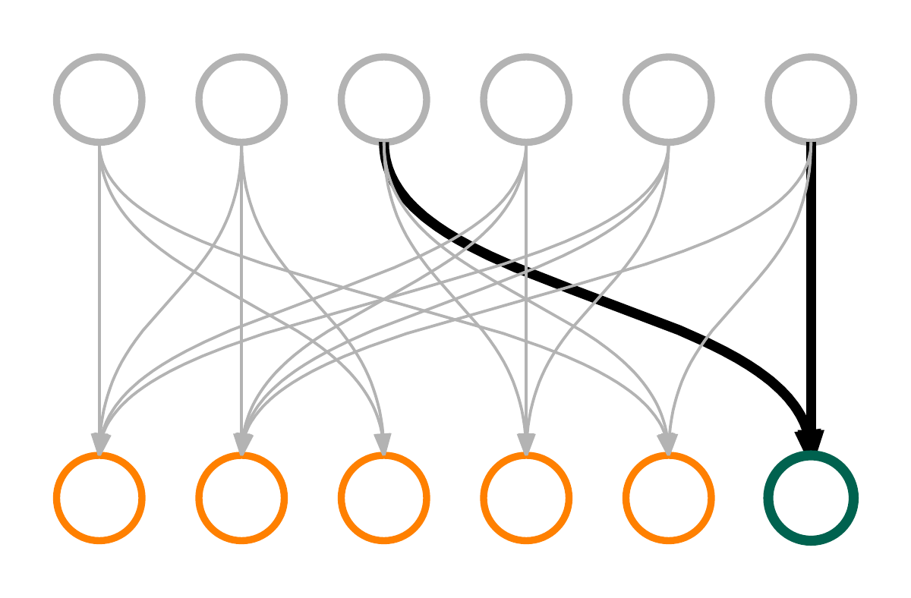
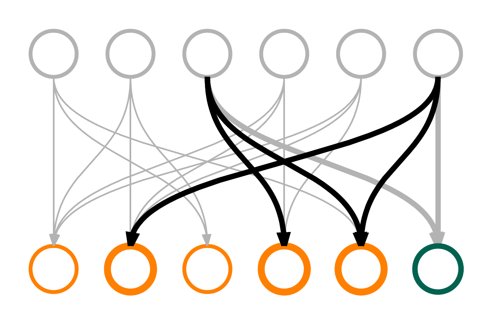
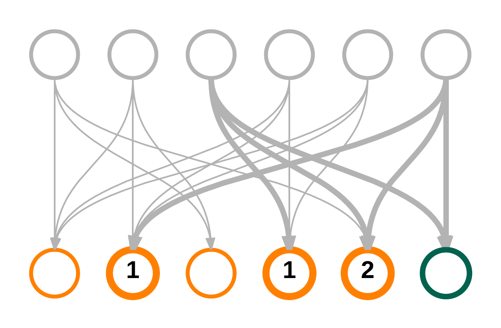
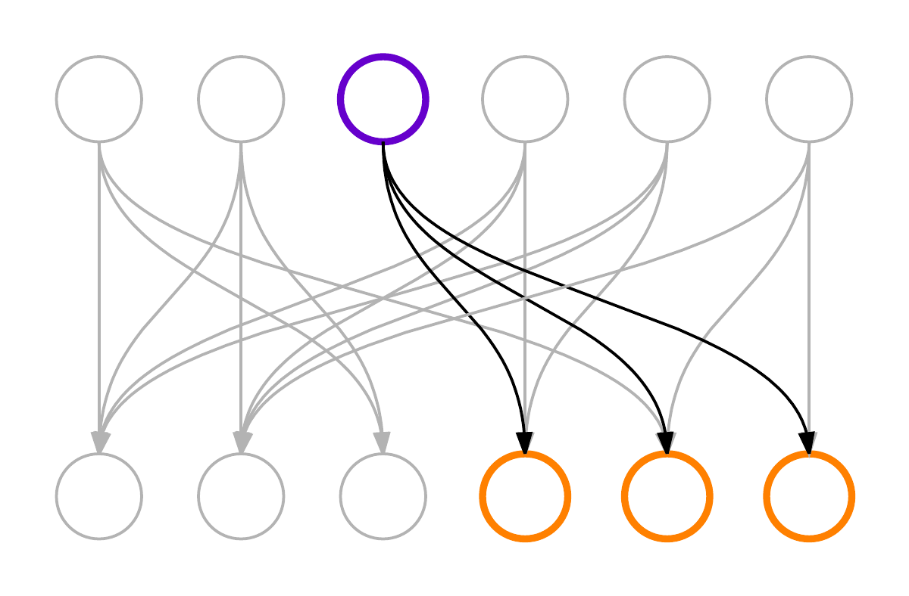
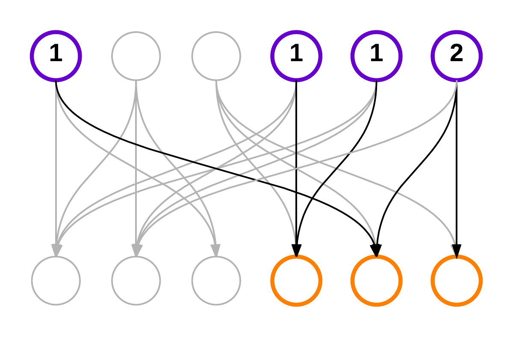
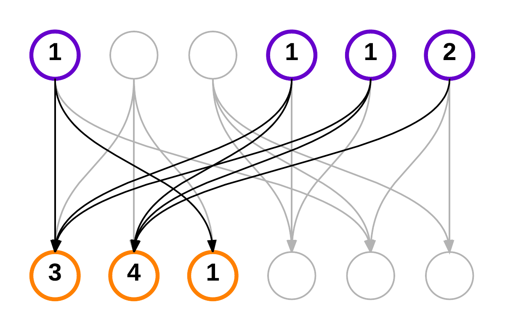
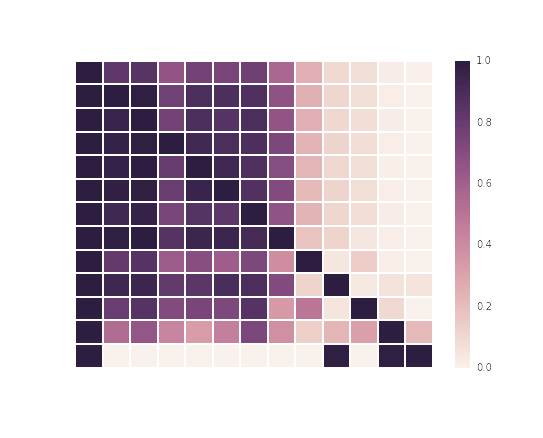
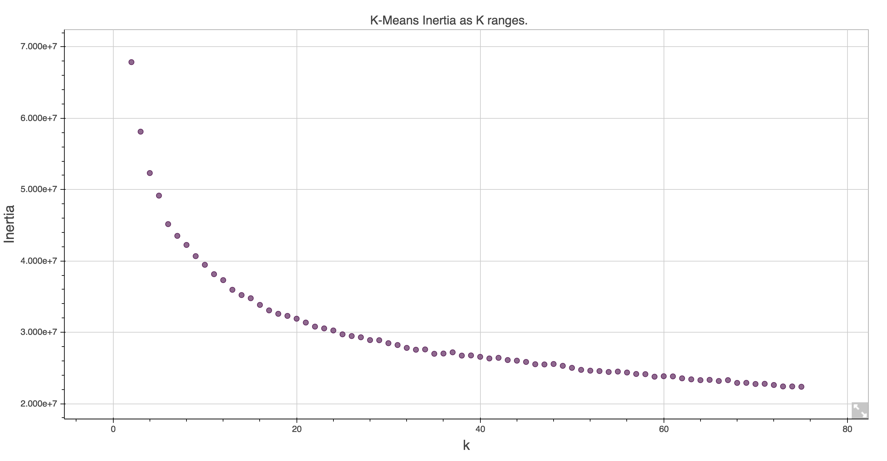
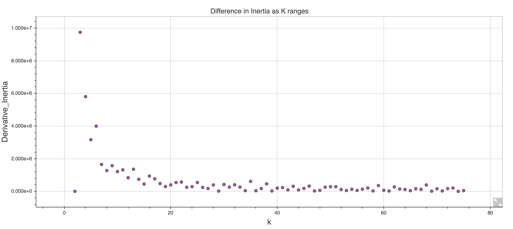

layout: true class: slide <img src="pd-logo.png" class="pd-logo"> --- # Graphs vs Tables ### First Half: 12:50 - 1:35 (ish) #### Intro to the debate #### Similarity from graph traversals #### Demo ### Second Half: 1:45 - 2:30 (ish) #### Similarity from tables #### Demo #### Discussion --- class: center,middle # Graphs vs Tables: # Ready? Fight. ### Lessons learned from building similarity models from structured healthcare data in both graph and relational dbs #### Denise Gosnell, PhD #### Data Scientist, PokitDok --- class: left, middle # False Dichotomy: ### A situation that is not jointly exhaustive ### or that is not mutually exclusive ### or that is possibly neither. --- class: center, middle ### If you're not with us, you're against us. --- class: center, middle ### Graphs vs. Tables --- # /about/pokitdok -- ### "The Operating System For The Business Of Health" --- ### Obligatory map of API usage .center[] --- # X12 Eligibility request ```html HL*1**20*1~NM1*PR*2*Premium Gold Insurance Co.*****PI*0123456~HL*2*1*21*1~NM1*1P* 1*Back*Has*Your***XX*9876543210~HL*3*2*22*0~TRN*1*89368DC6A14E4E529AA876ED416E8A9F *1453915417~NM1*IL*1*A-lot*Lifts****MI*MEM10001~DMG*D8*19820315*M~EQ*98^33~ ``` #### (the spec for this one request is 552 pages) --- # Our Eligibility request ```javascript { "member": { "birth_date": "1982-03-15", "first_name": "Lifts", "last_name": "A-Lot", "id": "MEM10001" }, "provider": { "first_name": "Has-Your", "last_name": "Back", "npi": "9876543210" }, "service_types": ["professional_physician_visit_office", "chiropractic"], "trading_partner_id": "premium_gold_insurance" } ``` --- # X12 Eligibility response ```html HL*1**20*1~NM1*PR*2*Premium Gold Insurance Co.*****PI*0123456~HL*2*1*21*1~NM1*1P* 1*Back*Has*Your***XX*9876543210~HL*3*2*22*0~TRN*2*89368DC6A14E4E529AA876ED416E8A9F* 1453915417NM1*IL*1*A-lot*Lifts****MI*MEM10001~N3*2150 Pleasant Drive~N4*Sunny*CA* 900010001~DMG*D8*19820315*M~DTP*291*D8*20141001~EB*B**98****10~EB*A**33*****.20~ ``` ### oh God make it stop --- # Our Eligibility response ```javascript { "coverage": [ "coinsurance": [ { "benefit_percent": 0.2, "service_types": [ "chiropractic" ] } ], "copay": { "copayment": { "amount": "10", "currency": "USD" }, "service_types": [ "professional_physician_visit_office" ] } ], "plan_begin_date": "2014-10-01", (...and so on...) } ``` --- class: center, middle # Enter the data storage debate: ### relational? graph? document store...? --- class: center, middle #Problem 1: ### How do we identify and recommend similar doctors within our data? -- class: center, middle ### Enter graphs. --- class: center # Graph DB Schema .center[] --- background-image: url(providers_100k_v1_small.jpeg) ### PokitDok Top 100K Providers --- class: center, middle #Problem 1: ### How do we identify and recommend similar doctors within our data? --- class: center, middle #Sub Problem: ### How do we identify similar doctors? --- class: center, middle .center[<img src="bipartieGraphSim_1.png" class="big-img" alt="Graph Similarity">] --- class: center, middle .center[<img src="doc_sim_0.png" class="big-img" alt="Graph Similarity">] --- class: center, middle .center[] --- class: center, middle .center[] --- class: center, middle .center[] --- class: center, middle .center[] --- class: center, middle #Sub Problem: ### How do we recommend similar doctors within our data? --- class: center, middle .center[<img src="bipartieGraphSim_1.png" class="big-img" alt="Graph Similarity">] --- class: center, middle .center[] --- class: center, middle .center[<img src="bipartieGraphSim_3.png" class="big-img" alt="Graph Similarity">] --- class: center, middle .center[] --- class: center, middle .center[<img src="bipartieGraphSim_5.png" class="big-img" alt="Graph Similarity">] --- class: center, middle .center[] --- class: center, middle .center[<img src="bipartieGraphSim_7.png" class="big-img" alt="Graph Similarity">] --- class: center, middle ## [Demo](https://github.com/pokitdok/gremlin-python) --- class: center, middle #Problem 2: ### How do we identify similar entities within our data? -- class: center, middle ### Enter Tables. --- # Our Eligibility response ```javascript { "coverage": [ "coinsurance": [ { "benefit_percent": 0.2, "service_types": [ "chiropractic" ] } ], "copay": { "copayment": { "amount": "10", "currency": "USD" }, "service_types": [ "professional_physician_visit_office" ] } ], "plan_begin_date": "2014-10-01", (...and so on...) } ``` --- # describe term x document matrices --- # describe similarity options: ### co-occurance ### k-means clustering on document vectors --- # Code walk through showing # Term x Doc --- # Code walk through showing # co-occurance --- class: center, middle .center[] # Co-occurrence Analysis --- # Code walk through showing # k means --- class: center, middle .center[] # Kmeans Analysis --- class: center, middle .center[] # Kmeans Analysis --- background-image: url(CirclePacking.png) ### Visualizing Similarity Clusters [Circle Packing Interactive] (http://10.0.2.129:8000/index.html?data=tfidf.json) --- # Graphs vs tables conclusion? --- .center[] ### Similar Payers --- background-image: url(SimilarTradingPartners.png) ### Similar Payers --- graph = table --- class: center,middle # Graphs vs Tables: # Ready? Fight. ### Lessons learned from building similarity models from structured healthcare data in both graph and relational dbs #### Denise Gosnell, PhD #### Data Scientist, PokitDok ---